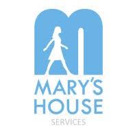

AI-powered grant discovery, eligibility checking,
and application drafting — built for Mary's House.
More fundraising capacity — without increasing headcount.
We didn't replace the fundraiser — we gave them their time back so they can focus on relationships, strategy, and the people who need them most.
Built for the women and children of Mary's House Services — because every hour saved in admin is an hour gained for the people who need it most.